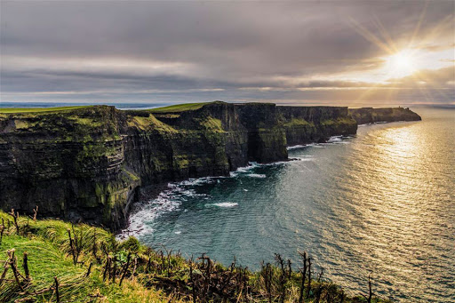

Galway is a city in the West of Ireland, in the province of Connacht. It is the county town of County Galway, which is named after it. It lies on the River Corrib between Lough Corrib and Galway Bay, and is the sixth most populous city in Ireland, with a population at the 2016 Census of 79,934.
Located near an earlier settlement, Galway grew around a fortification built by the King of Connacht in 1124. A municipal charter, received in 1484, allowed for the citizens of the then walled city to form a council and mayoralty for the city. Controlled largely by a group of merchant families, the Tribes of Galway, the city grew into a trading port. Following a period of decline, as of the 21st century, the city is a tourist destination and is known for hosting numerous festivals, celebrations and events, including the Galway Arts Festival.
In 2018, Galway was named the European Region of Gastronomy. The city was the European Capital of Culture for 2020, alongside Rijeka, Croatia.